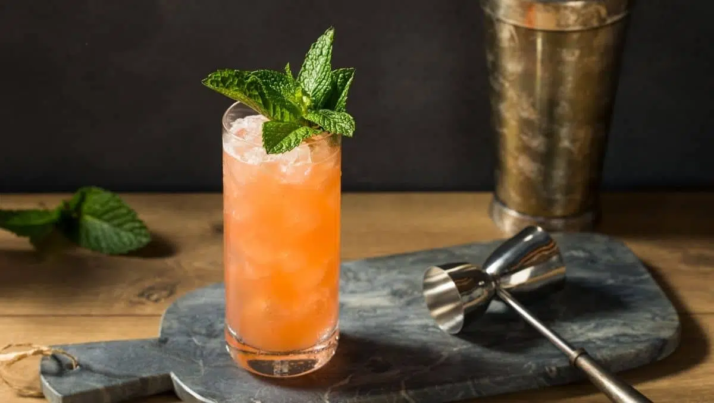

Zombie is a Tiki cocktail that was invented in the late 1930s in Los Angeles by Donn Beach. The cocktail is named Zombie after the way it affects the drinkers. The drink is made with demerara rum, golden rum, dark rum, 151 proof Lemon Hart, falernum, lime juice, grenadine, Pernod, Angostura bitters, and Don's mix.
Meal prep time : 5 minutes
Servings : 1